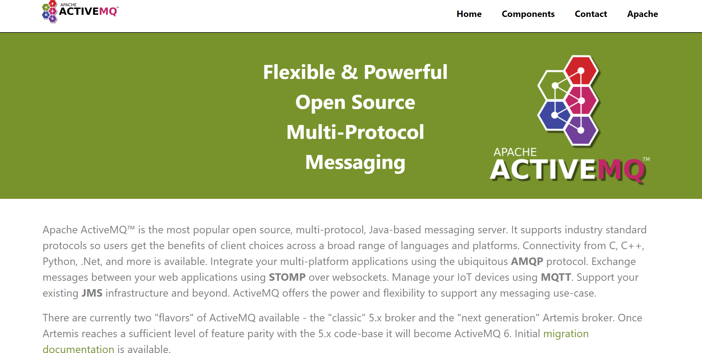
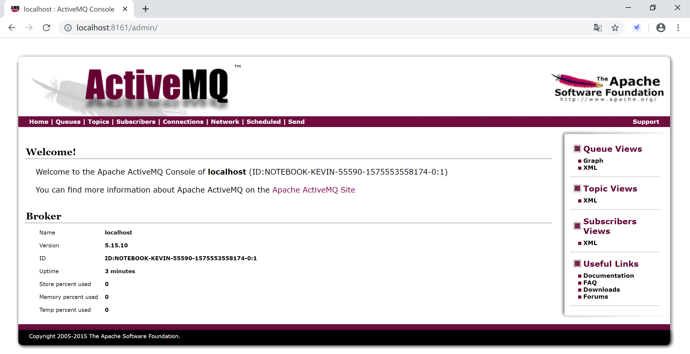
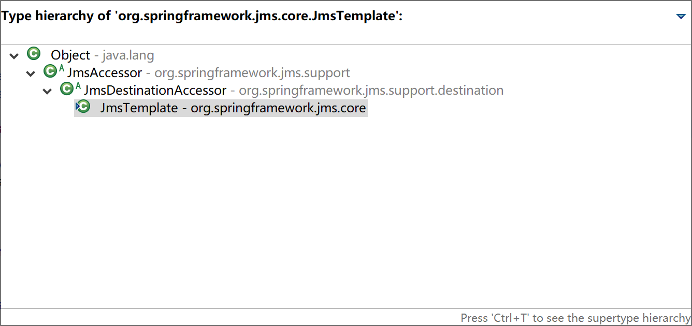
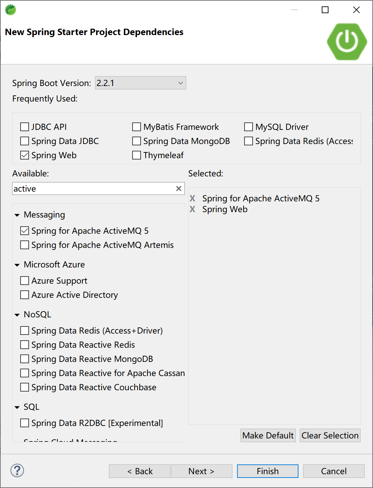
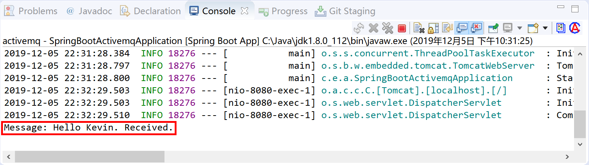
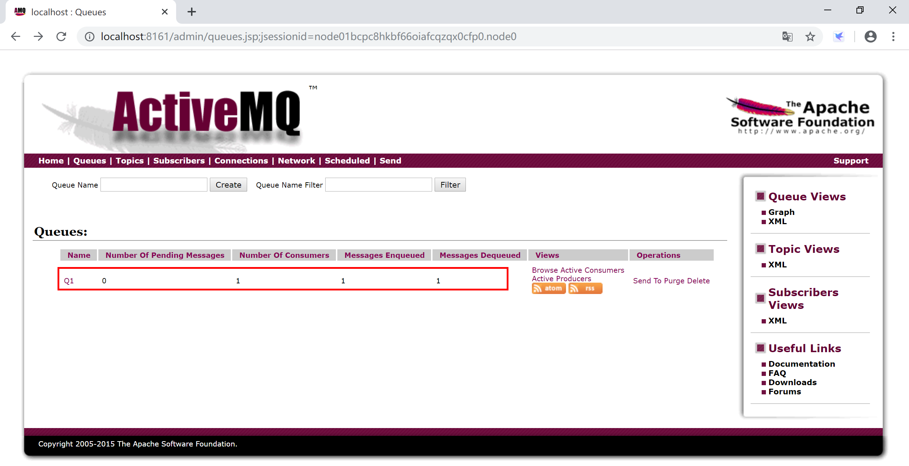
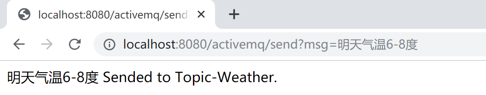
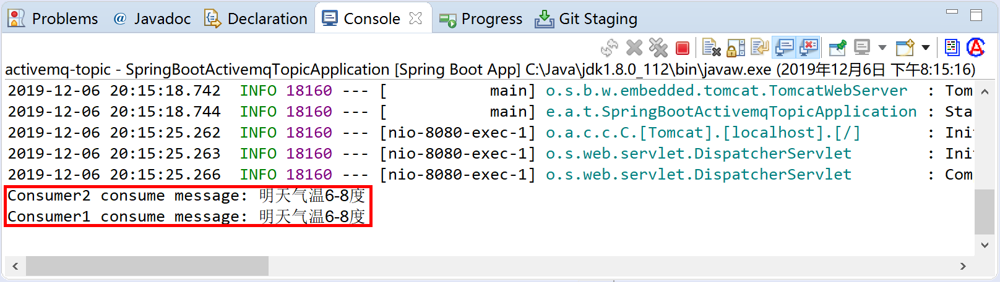
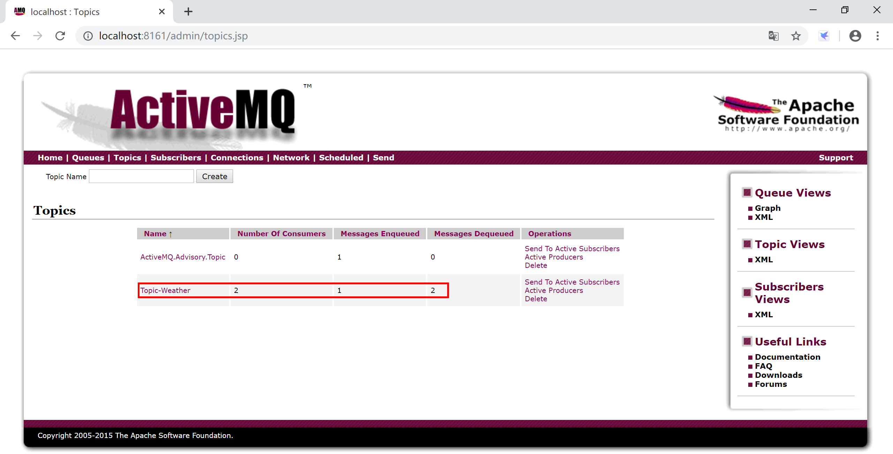

9.2 Spring Boot集成ActiveMQ
ActiveMQ是一种基于JMS 1.1规范的开源的消息中间件，ActiveMQ的设计目标是提供标准的，面向消息的，能够跨越多语言和多系统的应用集成消息通信中间件。

ActiveMQ非常成熟，功能强大，在早些年业内大量的公司以及项目中都有应用，偶尔会有较低概率丢失消息，现在社区活跃度在降低，国内应用越来越少。官方现在对ActiveMQ 5.x维护越来越少，几个月才发布一个版本。
9.2.1安装配置
到官网下载最新的 apache-activemq-5.15.10-bin.zip编译好的zip压缩包。
将其解压到磁盘，例如C:\Java\apache-activemq-5.15.10这个目录。
打开命令终端，进入ActiveMQ安装目录下的bin目录，执行activemq.bat start启动ActiveMQ服务器。
访问http://localhost:8161/index.html控制台，点击Manage ActiveMQ broker用户名和密码都是admin，进入管理界面，检查ActiveMQ是否正确安装。

因为ActiveMQ应用得越来越少，我们就不做集群安装配置演示了。
9.2.2 Spring Boot集成ActiveMQ
Spring Boot为ActiveMQ提供了启动器（starter），集成ActiveMQ很方便。
Spring为JMS提供了org.springframework.jms.core.JmsTemplate模板类，封装了常用的消息操作，使用起来非常方便。

新建一个Spring Boot项目，选择Spring Web和Spring for Apache ActiveMQ 5这两个starter依赖。

项目pom文件，最主要的就是：
<dependency>
<groupId>org.springframework.boot</groupId>
<artifactId>spring-boot-starter-activemq</artifactId>
</dependency>
9.2.2.1 点对点（Queue）模式
ActiveMQ的默认配置为点对点模式（spring.jms.pub-sub-domain=false）。
在配置文件application.yml中配置到ActiveMQ的连接信息：
spring:
activemq:
broker-url: tcp://localhost:61616
user: admin
password: admin
创建一个Controller，接收用户输入，向MQ发送消息：
package com.example.activemq.controller;
import org.springframework.beans.factory.annotation.Autowired;
import org.springframework.jms.core.JmsTemplate;
import org.springframework.web.bind.annotation.RequestMapping;
import org.springframework.web.bind.annotation.RestController;
@RestController
@RequestMapping("/activemq/")
public class ActiveMQController {
@Autowired
private JmsTemplate jmsTemplate;
@RequestMapping("/send")
public String sendMsg(String msg) {
jmsTemplate.convertAndSend("Q1", msg);
return msg + " Sended to Q1.";
}
}
在Controller中注入private JmsTemplate jmsTemplate;，然后使用JmsTemplate的send方法向Q1队列发送消息。
创建一个服务类，监听消息队列Q1，并简单地将接收到地消息输出到控制台。
package com.example.activemq.service;
import org.springframework.jms.annotation.JmsListener;
import org.springframework.stereotype.Service;
@Service
public class MessageListener {
@JmsListener(destination = "Q1")
public void msgReceive(String msg) {
System.out.println("Message: " + msg + " Received.");
}
}
注解@JmsListener(destination = "Q1")表示msgReceive方法监听Q1这个队列。
运行Spring Boot应用程序，访问http://localhost:8080/activemq/send?msg=Hello%20Kevin.，向消息队列中发送“Hello Kevin.”这样一条消息。
然后观察Spring Boot应用的控制台，可以看到由MessageListener.msgReceive方法从Q1接收到消息后在控制台输出的信息。

在ActiveMQ的管理控制台，也可以看到由程序创建的Q1队列，及消息消费者和消息相关的信息。

9.2.2.2 发布订阅（Topic）模式
在Spring Boot应用中通过spring.jms.pub-sub-domain=true配置，打开Spring对ActiveMQ发布订阅模式的支持。
新创建一个Spring Boot项目，选择Spring Web和Spring for Apache ActiveMQ 5这两个starter依赖。
在配置文件application.yml中配置到ActiveMQ的连接信息：
spring:
activemq:
broker-url: tcp://localhost:61616
user: admin
password: admin
packages:
trust-all: true
jms:
pub-sub-domain: true
在com.example.activemq.topic.producer包下面创建消息生产者类TopicProducer，将消息发送到“Topic-Weather”这个Topic上。
package com.example.activemq.topic.producer;
import org.apache.activemq.command.ActiveMQTopic;
import org.springframework.beans.factory.annotation.Autowired;
import org.springframework.jms.core.JmsTemplate;
import org.springframework.stereotype.Component;
@Component
public class TopicProducer {
@Autowired
private JmsTemplate jmsTemplate;
public void sendMessage(String msg) {
ActiveMQTopic destination = new ActiveMQTopic("Topic-Weather");
jmsTemplate.convertAndSend(destination, msg);
}
}
在com.example.activemq.topic.consumer包下创建消息消费者TopicConsumer，通过两个消息监听方法模拟两个订阅“Topic-Weather”主题的消息消费者（subscriber1和subscriber2）。
package com.example.activemq.topic.consumer;
import org.springframework.jms.annotation.JmsListener;
import org.springframework.stereotype.Component;
@Component
public class TopicConsumer {
/**
* 消息消费者1，监听"Topic-Weather"上的消息
* @param msg 消息
*/
@JmsListener(destination = "Topic-Weather")
public void subscriber1(String msg) {
System.out.println("Consumer1 consume message: " + msg);
}
/**
* 消息消费者2，监听"Topic-Weather"上的消息
* @param msg 消息
*/
@JmsListener(destination = "Topic-Weather")
public void subscriber2(String msg) {
System.out.println("Consumer2 consume message: " + msg);
}
}
在com.example.activemq.topic.controller包下创建和用户交互发送消息的控制器，在其中调用消息生产者TopicProducer类来发送消息。
package com.example.activemq.topic.controller;
import org.springframework.beans.factory.annotation.Autowired;
import org.springframework.web.bind.annotation.RequestMapping;
import org.springframework.web.bind.annotation.RestController;
import com.example.activemq.topic.producer.TopicProducer;
@RestController
@RequestMapping("/activemq/")
public class TopicController {
@Autowired
private TopicProducer topicProducer;
@RequestMapping("/send")
public String sendMsg(String msg) {
topicProducer.sendMessage(msg);
return msg + " Sended to Topic-Weather.";
}
}
运行Spring Boot应用程序，访问http://localhost:8080/activemq/send?msg=明天气温6-8度，向消息队列中发送“Hello Kevin.”这样一条消息。

然后观察Spring Boot应用的控制台，可以看到由TopicConsumer.subscriber1方法和TopicConsumer.subscriber1方法订阅Topic-Weather这个主题后接收到消息，在控制台输出的信息。

在ActiveMQ的管理控制台，也可以看到Topic-Weather及其消费者数量等信息。

本小节示例项目代码：
https://github.com/gyzhang/SpringBootCourseCode/tree/master/spring-boot-activemq
https://github.com/gyzhang/SpringBootCourseCode/tree/master/spring-boot-activemq-topic